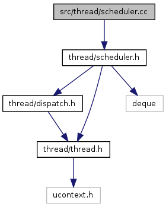

OOStuBS - Technische Informatik II (TI-II)
2.4
Main Page
Related Pages
Classes
Files
File List
File Members
src
thread
scheduler.cc File Reference
#include "
thread/scheduler.h
"
Include dependency graph for scheduler.cc:

Go to the source code of this file.
Generated on Wed Jun 12 2013 19:17:01 for OOStuBS - Technische Informatik II (TI-II) by
1.8.3.1
 1.8.3.1
1.8.3.1